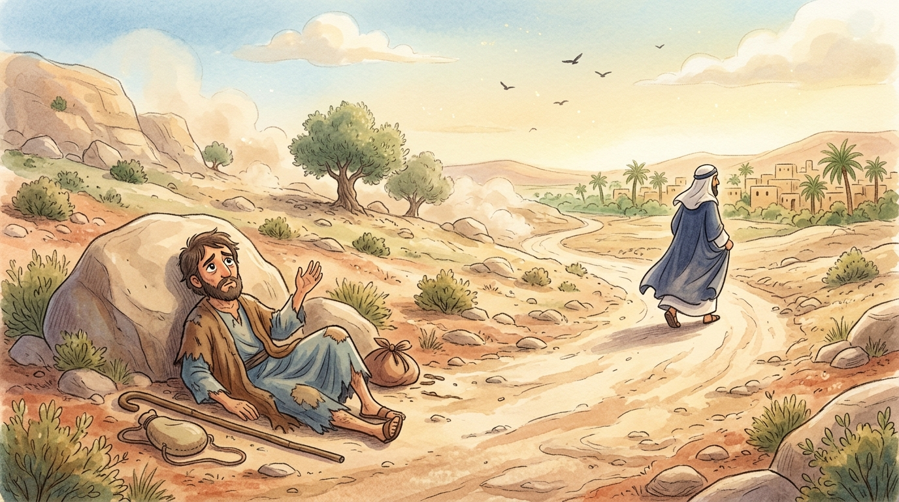
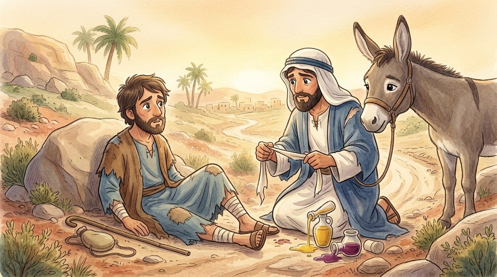
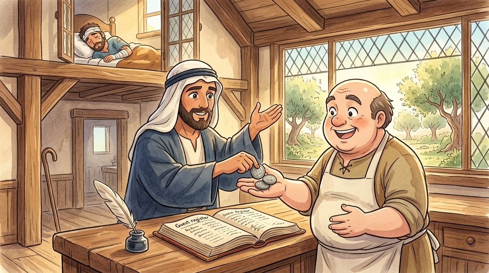

One day a law expert stood up to test Jesus with a question: "Teacher, what must I do to inherit eternal life?" Jesus pointed him to the greatest commands — love God with all your heart, and love your neighbor as yourself. But the man, wanting to look good, pressed further: "Ah, but who is my neighbor?" And Jesus answered — as he loved to — with a story.1 We shall read it in an unusual place: the battered guest register of a small inn on the Jericho road, where the story's last scene happened — with a few notes the old innkeeper scribbled in the margins.
Late evening. Two guests, one donkey. Guest one: a trader from Samaria, dusty, tired, oil and wine jars nearly empty. Guest two: carried IN by guest one — a traveler found beaten and robbed on the road, bandaged with strips of the Samaritan's own clothes. Room 3. Extra blankets. Margin note: In thirty years on this road I have seen everything. I have not seen this.
🏨 What happened up the road
Let the register tell it as the Samaritan told me while we settled his friend — for that is what he called a total stranger: "my friend."
A man was going down from Jerusalem to Jericho — seventeen miles of steep, twisting road through lonely rock country, the kind of road where you walk fast and don't stop.2 Robbers fell upon him: took his money, his goods, even his cloak, and left him half-dead by the roadside. And there he lay in the heat, unable even to call out, as the road went quiet again. Everything now depended on the next pair of sandals to come around the bend.
Footsteps! A priest — a temple man, coming down from serving in Jerusalem itself. Surely now— but no. The register must record it plainly: the priest saw the man, crossed to the other side of the road, and walked on. Perhaps he had his reasons. Perhaps he was late. Perhaps he told himself someone else would come.3 The road went quiet again.
More footsteps! A Levite — a temple assistant, another professional holy man. He came, he saw, he… also crossed to the other side, walking a little faster than before. The road went quiet a third time. And the sun climbed higher, and the flies gathered, and hope, I should think, was bleeding out on the stones with him.

🏨 The wrong rescuer
Then came the third traveler — and here, said the Samaritan with a tired little smile, is where anyone hearing this story in Judea would wince. For he was a Samaritan: and Jews and Samaritans, you must understand, had despised each other for centuries — wrong worship, wrong mountain, wrong blood, five hundred years of grudges. Travelers would cross the whole Jordan valley to avoid Samaritan country. If the beaten man could have chosen his rescuer, he'd have chosen almost ANYONE else.4
And the Samaritan saw him. And — the Bible uses a beautiful strong word here — he was moved with compassion. Not "he felt a bit bad." Moved — in the stomach, in the heart, in the feet. And where two holy men had crossed the road away, the wrong-country stranger crossed the road toward.
Knelt in the road dust. ✓ Cleaned the wounds with his own wine, soothed them with his own oil — his trade goods, mind you, his profit. ✓ Tore up cloth for bandages. ✓ Lifted the man onto his own donkey and walked the dangerous miles himself. ✓ Brought him to my inn, and sat up with him all night. ✓ And in the morning… see the next entry. ✓

Payment received: two silver denarii — two full days' wages — pressed into my hand at dawn by the Samaritan, with these exact words, which I record because I never heard their like: "Look after him. And whatever more you spend, I will repay you when I return." An open bill! For a stranger! From the wrong side of the river! Margin note: I have kept this page clean of wine stains on purpose. Some entries a man wants his grandchildren to read.5
🏨 The question turned upside down
Now — back to Jesus and the law expert. The man had asked, "Who is my neighbor?" — which, if you think about it, really means: who can I get away with NOT loving? Where is the line? When the story ended, Jesus handed the question back, turned completely upside down:
The expert in the law replied — unable, notice, even to say the word 'Samaritan' — "The one who had mercy on him."
And Jesus told him: "Go and do likewise."
Do you see the flip? The lawyer asked "who counts as my neighbor?" — wanting a list, a boundary, a fence. Jesus answered a different question: "what does it look like to BE a neighbor?" Neighbor isn't a category of people who deserve your love. Neighbor is what YOU become the moment you cross the road toward someone who needs you — whoever they are, wherever they're from, whatever your people think of their people.

The old innkeeper kept that register page till his dying day, and here is what he wrote at the bottom, for us: "Every soul on this road is somebody's ditch-moment waiting to happen — and every soul is somebody's Samaritan waiting to be brave. The holy men knew all the right answers and crossed the road. The stranger knew the right thing to DO. When you meet your ditch, child — the lonely kid at school, the one everyone else walks past — don't ask who counts as your neighbor. Cross the road. Kneel down. Go and do likewise." 🏨